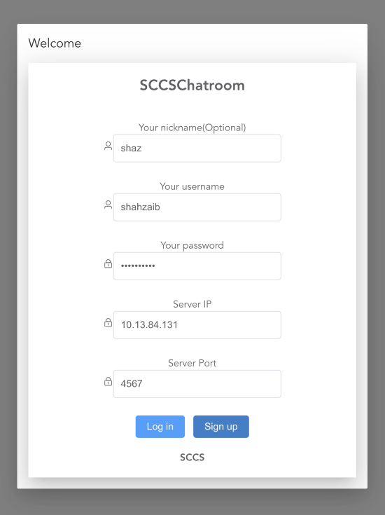

Group 1 - Zhihao Cheng - Shahzeb - Sabrina Afrine Sathi - Zhisong Chen
This project is a WebSocket-based overlay chat application (github repo) utilizing customized protocol, inspired from XMPP, for real-time messaging for inter and intra groups communication. This application has a server implemented in Node.js and a client application built with Electron and Vue.js, designed to offer end-toend encrypted and efficient communication in both group and private chat with user-friendliy UI. Morver, The application aims to provide a seamless and responsive user experience across different platforms including Windows, macOS, and Linux.
The chat application has following features:
Node.js: JavaScript runtime for server-side operations. Chosen for its efficient, event-driven architecture, ideal for real-time applications requiring high performance and scalability.
WebSocket: Full-duplex communication protocol over a single TCP connection enabling real-time, bi-directional data exchange between server and client with low latency.
Custom Protocols: Tailored messaging and presence protocols defined in util/protocol.js file and are used for managing the communication between the server and clients.
SQLite: Lightweight, disk-based database for storing user data and chat logs. Selected for its simplicity, reliability and ease of Node.js integration.
Electron: Framework for developing cross-platform desktop applications with JavaScript, HTML, and CSS using web technologies, combining Chromium and Node.js into a single runtime,.
Vue.js: Progressive JavaScript framework for building the responsive user interfaces, used to create the front-end due to its simplicity and reactive data-binding capabilitie.
NPM: Node Package Manager for efficient handling of project dependencies, facilitating easy installation and management of third-party libraries.
Below is the protocol stack used in the Chat application:
📂 websokect_chat_app-main/
├── 📄 .gitignore
├── 📁 JsServer/ Server-side code
│ ├── 📁 .cache/ Cache files
│ │ └── 📁 .../ Various cache files
│ ├── 📁 client/ Client service logic
│ ├── 📁 database/ Database scripts and files
│ ├── 📁 server/ Server service logic
│ ├── 📁 task/ Task queue management
│ ├── 📁 util/ Utility functions
│ ├── 📄 configuration.json / Server configuration
│ ├── 📄 index.js/ Entry point for the server
│ ├── 📄 init_linux.bash
│ ├── 📄 init_windows.bat
│ ├── 📄 package.json/ NPM dependencies and scripts
│ └── 📄 package-lock.json/ Lock file for NPM dependencies
├── 📁 SCCSChatRoom/ Client-side code
│ ├── 📁 build/ Build resources
│ ├── 📁 resources/ Static resources
│ ├── 📁 src/ Source code
│ │ ├── 📁 main/ Main process
│ │ ├── 📁 preload/ Preload scripts
│ │ ├── 📁 renderer/ Renderer process (Vue.js application)
│ │ │ ├── 📁 assets/
│ │ │ ├── 📁 components/
│ │ │ ├── 📁 utils/
│ │ │ └── 📁 views/
│ ├── 📁 .vscode/ VS Code configuration
│ ├── 📄 electron-builder.yml
│ ├── 📄 electron.vite.config.mjs
│ ├── 📄 package.json
│ ├── 📄 package-lock.json
│ ├── 📄 run_linux.bash
│ ├── 📄 run_windows.bat
The follow diagrams explains the workflow of client and server code with functions and attribute details in each script/file.


install nodejs from https://nodejs.org/en/download/package-manager
If there is a start error then run the following commad to install the npm CLI globally.
npm install -g npm
Verify the installation by opening a command prompt or PowerShell and running:
node -v
npm -v
brew install node
Verify the installation by checking the versions of Node.js and npm.
node --version
npm --version
Clone Github Repo
git clone https://github.com/Shahzeb892/websokect_chat_app.git
cd websocket_chat_app
Install server dependencies:
cd JsServer
npm install
Install client dependencies:
cd ../SCCSChatRoom
npm install
cd ../JsServer
node ./index.js #For Mac / Linux
node .\index.js #For Windows
cd ../SCCSChatRoom
npm run dev
After suceesfully install dependan, the SCCS chatroom application presents a user-friendly login interface with a welcom message. The login screen includes the following fields:

In order to create an account, enter a unique username, a password (minimum 8 characters), and the server IP address. Upon successful registration, a confirmation message will be displayed on the window as shown below.

If any errors occur or invalid information is entered during the registration process, error messages will be displayed as shown below, indicating the specific reason for the account creation failure.

After successfully creating an account, click the login button to access the application. Upon successful authentication, the SCCS chatroom window will appear. If login fails, an error message will be displayed.

The SCCS chatroom interface features a dual-panel design, with the user list on the left and the chat area on the right. Key features include:
User Information: Displays the client's nickname, JID and server IP at the top.
Public Chatroom: It is a group chat among all online users on the network.
Online Users List: Provides a real-time display of all currently connected users, including their nicknames and JIDs.
Messaging System:
a. User Selection: Choose the recipient (individual user or public chatroom) before composing a message.
b. Recipient Indicator: The selected recipient's name is displayed at the top of the chat box.
c. Send Functionality: Click the "Send" button to transmit the message.
File Attachment:
a. Attachment Selection: Click the arrow icon adjacent to the send button to choose a file.
b. File Size Limitation: Ensures attached files do not exceed 10 KB.
c. File Sending: Use the send button to transmit the attached file.

In order to enable cross-server communication, add the domain and IP address of the other groups' servers in the configuration file. This is shown in the example below, where the details of groups 11, 3, 4, 6, and 2 are added. settings for the server are found in JsServer/configuration.json. Adjust these settings to suit your environment after connecting to the same subnet in the network.
{
"server": [
{ # Other Groups Servers Details Examples
"domain": "s11",
"address":"10.13.101.178"
},
{
"domain": "s3",
"address":"10.13.83.163"
}
,
{
"domain": "s4",
"address":"10.13.101.145"
}
,
{
"domain": "s6",
"address":"10.13.81.121"
}
,
{
"domain": "s2",
"address":"10.13.89.245"
}
],
# Application Server Details
"defaultServerPort": "5555",
"defaultClientPort": "4567",
"defaultDomainName": "s1",
}
This project is licensed under the MIT License. See the LICENSE file for details.